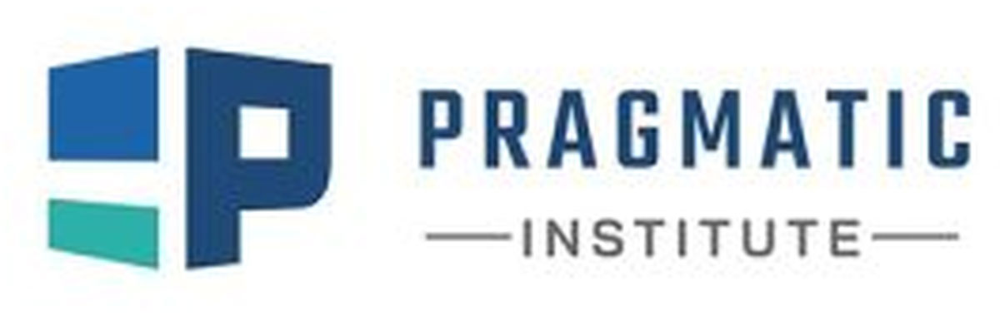

Flipick LMS G2 puts AI across the whole learning lifecycle — content creation, engagement, assessment and analytics — and aligns every learner to real industry roles through frameworks like the Singapore Skills Framework.

The learning assistant answers only from your verified content, and every response is cited back to the source. Built for regulated training.
Courses, pathways and goals are mapped to the Singapore Skills Framework — so learning ties to real occupations and competencies, not guesswork.
A knowledge-grounded assistant, grounded only in your content.
Dashboards for learners, managers and administrators.
Generate assessments straight from your content.
Create faster, on-brand and on-framework.
Map every learner to a real role.
Adaptive, exam-grade evaluation.
A unique path for every learner.
Career-aligned upskilling journeys.
Flipick LMS is built by a learning-technology company. Pair it with Flipick’s cinematic AI video to create the lessons inside your courses, then deliver and prove them. Create → distribute → prove.
Bring your training goals and we’ll show you how AI runs the whole learning lifecycle.